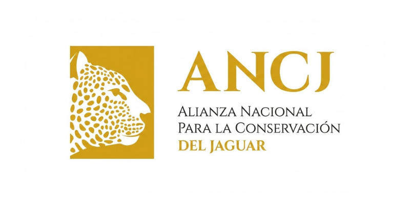
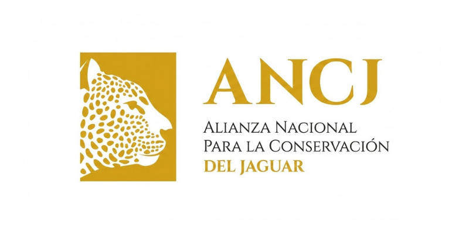

"Estamos en la sexta extinción masiva. Lo que hagamos en los próximos 20 años definirá el futuro de la biodiversidad. Esta es una batalla que sí se puede ganar."
— Dr. Gerardo J. Ceballos González, ANCJ
México tiene la mejor ciencia en conservación de jaguares del mundo
Gracias a la Alianza Nacional para la Conservación del Jaguar (ANCJ), liderada por el Dr. Gerardo Ceballos — investigador del Instituto de Ecología de la UNAM y ganador del Premio Nacional de Ciencias — México logró el único caso de éxito global en recuperación de jaguares.
La ciencia funciona. La conservación da resultados. Pero necesita recursos para seguir adelante.
Especie Sombrilla
El jaguar es el depredador tope de su ecosistema. Al protegerlo, proteges el ciclo del agua, la flora, la fauna diversa y la biodiversidad completa. Un solo acto de conservación con impacto masivo.
 

#MiSelecciónEsElJaguar
En Redes
Miles de personas ya eligieron al jaguar este 2026. Comparte tu apoyo y únete a la conversación.